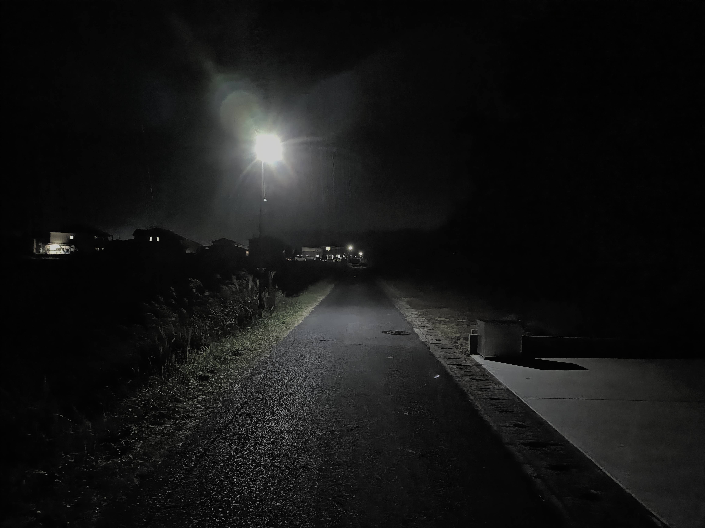
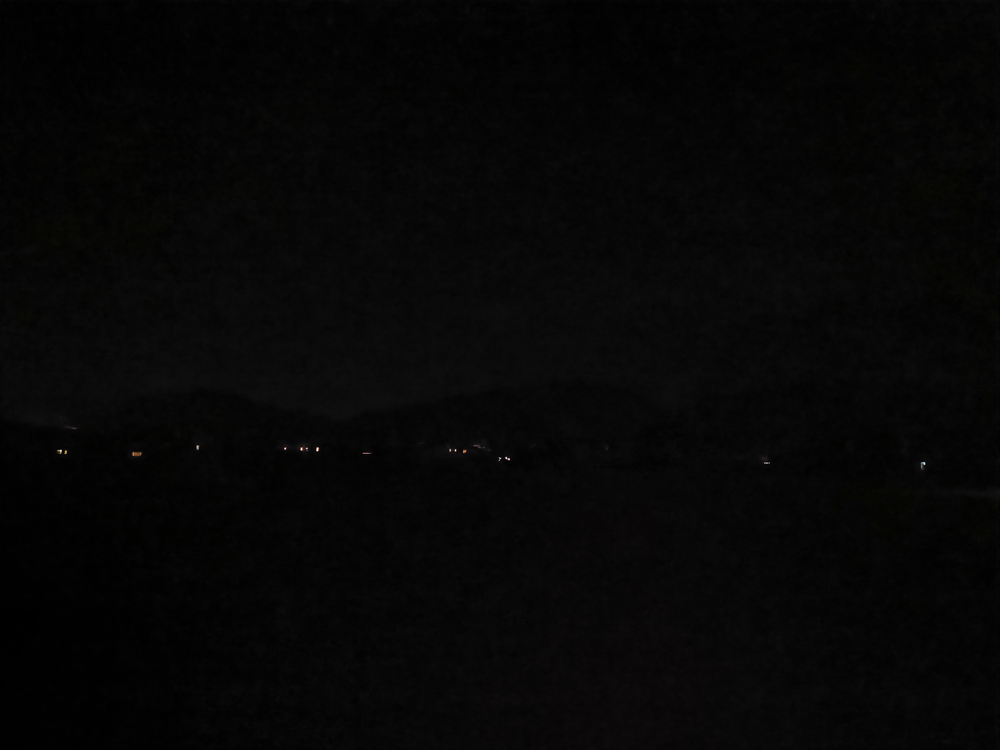
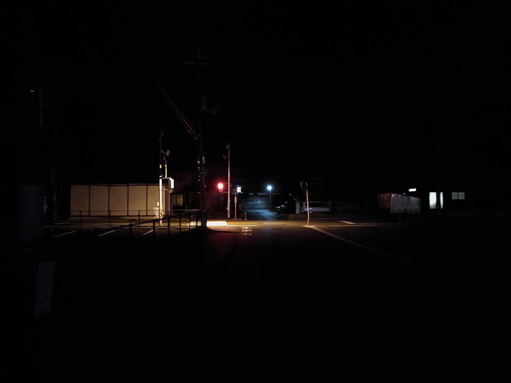
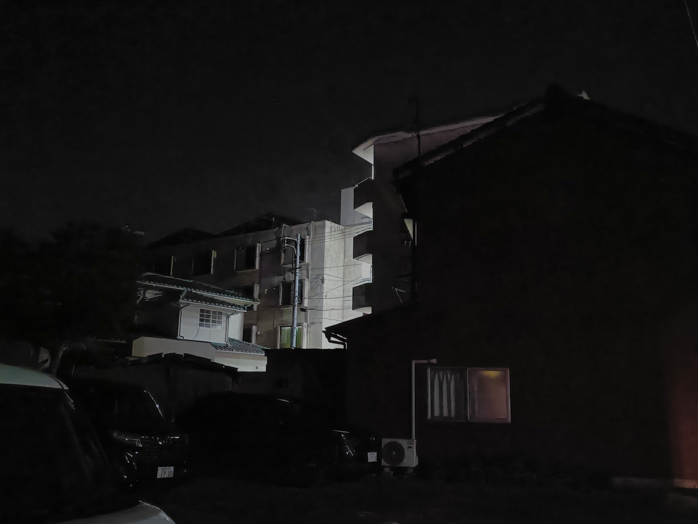

散歩日誌（2026/11/13）
2026-11-13
風呂の沸いた家の換気扇からする匂い。
外の空気が寒くて涙が出る。
少し向こう側に見える店の煌々とした灯りも、後数時間経てば消えてしまって、
朝になるまで真っ暗な静寂の中にいるだろう。
数十キログラムの人間の足が、波打った地面の上に置かれる。
それも、地面にとっては軽々しい。
もし、この寂しい家々の明かりが、途端にすべて消えてしまえば、
私は真っ暗闇のなかで立ち尽くすことになるだろう。
けれども、もし、最初からこんな明かりがなければ
私は星を導にして歩いていただろう。
周りのあらゆる草が僕を見ている。
祖父母宅、古く立派な日本家屋の、床が軋む音が好きだった。
暗闇は寂しいなどというが、私には少し眩しいくらいの電柱の下の方がずっと寂しい。
やっと、秋の虫の声が聞こえてきた。
僕の耳は腐っていたのだろうか。


水が流れている音を聞いた。
水が流れるような音ではなかった。
弾けるような、昔、井戸を汲み上げたときに聞いたような音だった。

僕の足音が
水が流れる音が
そこの家の壁に跳ね返って
チープな音を立てている

どうやら僕は、そこの隙間、生活の隙間、そういうものが好きらしい。
すれ違う自動車のヘッドライトの片方が少し翳っているのを見ると、
片方の目を曖昧に閉じている人のような感じがする。